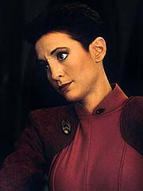
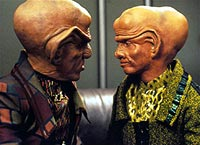
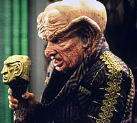
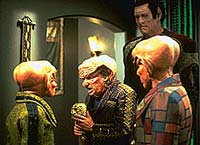

MANCHETE
DO EPISDIO
Episdio
Ferengi da temporada tem
crtica
nada sutil discriminao sexual
Episdio
anterior | Prximo
episdio
Sinopse:
Data Estelar:
desconhecida.
Tarde no "Quark's" e Jadzia
Dax est jogando Tongo com seus amigos Ferengis. Dax ganha todas,
um talento do seu antigo hospedeiro Curzon. Rom diz que prefere
uma fmea Ferengi --"uma que nunca usa roupas, nunca
responde, e nunca joga Tongo". Em meio ao jogo, um garom
oferece uma idia a Quark que poder aumentar a margem de lucro
do bar.

Quark
gosta da sugesto do garom, de nome Pel, e os dois acham algo
em comum, citando regras de aquisio Ferengis. Chega uma
mensagem subespacial do Grande Nagus Zek, nomeando Quark o seu
negociador chefe para a expanso Ferengi no quadrante Gama, uma
oportunidade nica para negcios.
Sisko, Kira e Zek esto em reunio no escritrio de Sisko --Zek
quer promover um encontro com os Dosi, uma raa do quadrante
Gama, em DS9. Com algum papo e uma generosa doao de
fertilizante para Bajor, Zek consegue a licena para a reunio,
concordando em no trapacear.
Zek diz a Quark que ele deve comprar dos Dosi 10.000 tonis de
tulaberries, propcios a produo de vinho, para estabelecer
uma rede Ferengi de distribuio de bebidas no quadrante Gama.
Pel avisa a Quark que Zek pode estar usando-o como uma figura a
receber a culpa, se as negociaes falharem. Quark contrata Pel
como consultor frente a um enciumado Rom. Aps o trabalho, Pel
volta aos seus aposentos, revelando-se uma mulher.
Os Dosi chegam a DS9. Na mesa de negociaes dois de sua espcie,
o macho Inglatu e a fmea Zyree, frente Quark e Pel. Inglatu
oferece apenas 5.000 tonis, mas Quark insiste nos 10.000. Os
Dosi querem falar diretamente com Zek. Pel interrompe dizendo que
a nica via de negociao com Quark. Inglatu diz que eles vo
pensar no assunto.
Maihar'du entrega um brinco de ouro para-latinum, presente de Zek,
a Kira. Kira fica furiosa, mas Dax diz que, apesar dos Ferengis
terem os seus defeitos, eles tambm podem ser um bocado
divertidos, se voc d uma chance a eles.
Zek se junta aos demais Ferengis na mesa de Tongo. Ele diz a Quark
que decidiu que somente 100.000 tonis sero suficientes para
suprir as necessidades da Aliana Ferengi. Quark fica surpreso e
preocupado. Pel intervm e enaltece o "gnio" de Zek.
Quando Pel e Quark vo buscar comida, Zek comenta que "tal
lealdade deve custar muito caro" ao que Dax responde que
"voc
no pode comprar este tipo de lealdade". Quark tambm no
entende a devoo de Pel.
Conversando no Replimat no dia seguinte, Dax diz a Pel que admira
o que ela fez por Quark, uma atitude totalmente no-Ferengi. Pel
admite adorar Quark e Dax pergunta se ele sabe. Pel diz que ele no
sabe nem ao menos que ela uma fmea. Dax fica chocada.
Pel explica que mulheres Ferengis no podem deixar a casa, usar
roupas, ou mesmo aprender a ler. Ela diz que queria mais da vida.
Arrumou um par de lbulos sintticos e comeou a se passar por
homem para realizar negcios, porm ela no contava em se
apaixonar por Quark. Neste momento Quark interrompe para avisar
que as negociaes vo recomear.
Kira devolve o brinco a Zek, que desapontado, lhe d um belisco
quando ela vai embora, "Dax deve ser maluca", murmura a
major. A proposta de compra de 100.000 tonis por parte de Quark,
faz com que os Dosi desistam das negociaes e deixem DS9. Zek
est furioso com Quark mas Pel intervm de novo, e convence Zek
a emprestar a nave para que ela e Quark possam ir
ao planeta natal dos Dosi e terminar as negociaes l.
No caminho Pel e Quark conversam sobre a sbita deciso de Zek
pelos 100.000 tonis, um nmero 10 vezes maior que a proposta
original. Pel acha que Zek sabe mais do que est falando. Quark
diz que foi a melhor coisa possvel ter contratado Pel para a
consultoria. Pel decide contar a Quark sobre a sua "situao",
mas Quark desconversa citando mais uma regra de aquisio.
Odo e Rom (que est tomando conta do "Quark's" na ausncia
do seu irmo) conversam sobre a ausncia de Quark e a presena
de Pel ao lado dele. Aps a conversa, um decidido Rom entra nos
aposentos de Pel e descobre a sua caixa de lbulos artificiais.
Chegando ao seu destino, Quark no larga do p de Inglatu.
Inglatu, j cansado da insistncia de Quark, concorda com os
10.000 tonis mas diz que 100.000 so impossveis. Quark diz
que no vai embora enquanto no conseguir o que quer. Inglatu,
totalmente sem pacincia, diz para ele ficar se quiser.
Quark e Pel vo dormir no mesmo quarto. Quark est exausto e
quer descansar, mas, nervosa, Pel quer puxar conversa. Finalmente
o vinho tomado por Pel faz efeito e ela d um beijo em Quark.
Zyree chega e interrompe Pel, no meio de uma explicao sobre o
ocorrido. Zyree diz que Inglatu no pode vender 100.000 tonis,
pois no existe o suficiente em todo o planeta para suprir tal
demanda. Mas ela tambm diz, que, por uma comisso, pode coloc-los
em contato com os Karemma, que podero fornecer tal quantidade.
Os Karemma so membros de um poderoso grupo denominado
"Dominion".
De volta a nave de Zek, Quark diz que agora entendeu o que Zek
queria, ele no estava interessado em tulaberries, ele queria
entrar em contato com o Dominion. Quando Pel tenta retomar o
assunto do "beijo", Quark nega que tal coisa sequer
tenha acontecido.

De
volta ao "Quark's", Rom tenta de todas as maneiras falar
com Quark, mas este s quer falar com Zek. Zek aps ouvir o nome
"Dominion" da boca de Quark confessa o seu plano, e diz
que ouviu falar do Dominion por meio de rumores que indicavam que
qualquer empreendimento no quadrante Gama deveria passar direta ou
indiretamente por eles. Os Dosi pareciam no saber
muito sobre o Dominion, mas ele tinha esperana que eles pudessem
indicar algum que soubesse. Tal informao tem muito valor
para ele.
Quando Quark diz que agora tem meios de marcar um encontro com os
Karemma (um membro do Dominion), Zek diz que se Quark conseguir
tal feito, ter uma parte em todas as transaes Ferengi do
quadrante Gama. Quando Quark finalmente ouve de Rom sobre o
"segredo" de Pel, com a confirmao desta, ele cai
desmaiado.
Na enfermaria, a ss com Rom, Quark acorda e o agarra. Rom jura
que no disse nada a ningum. Quark diz que Zek no pode saber
nada disto, pois isto seria a runa de Quark, mesmo tendo que
ocultar o crime cometido, segundo a lei Ferengi, por Pel. Rom
ainda insiste em contar a Zek para salvar Quark dele mesmo, porm
quando Quark oferece o bar pelo silncio de Rom, este diz:
"Pel? O que tem ELE?"
Quark vai aos aposentos de Pel, que no est usando seus lbulos
sintticos. Ele diz que ela tem que sumir da estao o mais rpido
possvel e oferece 10 barras de latinum para ajud-la a recomear
a vida. Ele diz para ela assumir o seu papel de homem e levar o
lucro. Pel diz que isto no mais sobre lucro e sim sobre amor.
Ela quer que Quark admita que sente algo por ela.
Quark diz que no far diferena alguma se ele sentir algo por
ela ou no, Pel nunca ser feliz como uma tpica esposa
Ferengi. Pel diz que eles podem ir para o Quadrante Gama onde
ningum ir ligar se ela usar roupas ou no. "Eu vou
ligar", diz Quark. No h mais nada a se dizer, Pel comea
a fazer as malas.
Mais tarde, quando Rom Quark e Zek esto celebrando, Pel entra
para dizer adeus para o Nagus. Zek elogia Pel e diz que ela tem
"os lbulos para o negcio". Pel arranca suas orelhas
falsas, mesmo com Quark tentando imped-la, e as joga em cima de
Zek. Zek fica horrorizado e Rom diz: "Isto quer dizer que eu
no vou ficar com o bar?"
Zek diz que Pel no tem futuro assim como Quark que aceitou
conselhos sobre negcios de uma fmea. Quark retruca dizendo que
Zek tambm enviou uma fmea como sua representante em uma
negociao, o que to proibido quanto. Zek percebe o impasse
e delibera que a real identidade de Pel ser mantida em segredo,
mas isto ir custar todos os lucros de Quark referentes as transaes
no Quadrante Gama.
Pel diz que sente muito por Quark, mas ela diz que Zek e a
sociedade Ferengi tm que comear a mudar. Pel diz que est de
partida e d um beijo em Quark. Pel diz que se no pode ter
Quark ela vai ficar com o Latinum.
Depois, no bar, Dax diz que vai sentir falta de Pel e Quark tambm.
"Voc realmente acha que eu deixaria algum se intrometer
entre ns", diz um lascivo Quark. Dax o olha bem, e diz:
"Boa tentativa Quark, mas eu te conheo melhor do que
imaginas". E quando ela se retira, o sorriso de Quark
desaparece em uma face de real pesar.
Comentrios:
Aps "Melora",
s poderamos subir, mas ainda continuamos muito distantes de
uma boa hora de televiso. Apertem os cintos e vamos dar um
passeio nesta verso Ferengi de "Yentl".
A princpio o episdio parece ser uma "mensagem Trekker da
semana" sobre a discriminao de gnero. Para isto
utilizada como alegoria (por absurdo) o papel que as fmeas
Ferengis representam naquela sociedade. Nascido como algo fadado
ao fracasso, por se basear em uma alegoria dentro de uma outra
alegoria (a caricata sociedade Ferengi), e com uma execuo nada
sutil com Pel disparando prolas, tais como "Eu sou to
capaz quanto qualquer homem", o episdio parece um srio
candidato a desastre total, como "Melora",
na semana passada.
Entretanto o prprio episdio parece dizer que no devemos
levar muito a srio o seu prprio tema, com ridculos
"aliengenas da semana", descaracterizao dos
personagens e bvias e foradas tentativas de humor. Por incrvel
que possa parecer, esta "zona" (e alguns, realmente
bons, momentos espalhados) que acaba por salvar o episdio de um
naufrgio completo. Rindo do que no deveramos rir e no
rindo do que deveramos, simplesmente passamos por mais uma hora
de
televiso.

A
trama essencialmente no tem furos. Mas to pouco inspirada e
bvia que nem tem como "enfiar" furos nela. O que no
deixa realmente o episdio "afundar" so alguns pontos
isolados, espalhados durante o seu curso.
Os melhores momentos, dentre os dos personagens e dentre os do
episdio com um todo, foram aqueles envolvendo Dax: sua natural
interao com os Ferengis; sua habilidade nos jogos de azar; seu
total desprezo sobre "o que os outros pensam", algo que
acredito estar de acordo com a perenidade do simbionte por inmeros
perodos de vida e algumas pistas sobre a sexualidade dos Trills.
Este ltimo aspecto, a sexualidade dos Trills, sempre foi algo
que me fascinou em relao a esta raa. Quando ele veio tona
anteriormente nas cenas finais do episdio "Dax",
ele foi extremamente amenizado. Aqui, foi muito interessante o
fato de Dax intuir que Pel estava apaixonada por Quark mesmo sem
considerar que ela era de fato uma mulher.
Certas partes com Rom e Zek tambm tiveram um certo apelo.
O chato que a posio de Quark sobre o tema do episdio me
pareceu um bocado indefinida e o romance com Pel (especialmente
pelo lado de Quark) me pareceu totalmente absurdo e artificial.
Quanto a TODOS os outros personagens: SOBROU indiferena da minha
parte.

A
direo de David Livingston (um dos meus favoritos) prejudicou
um bocado o episdio. A mera presena dos Dosi em cena era um
motivo de comdia involuntria, bobagens escritas no roteiro
foram "amplificadas", com uma ridcula maquiagem e direo
de atores pra l de "over". A cena entre Quark e Pel no
quarto foi atroz e mesmo a opo de colocar seios em Pel foi
equivocada.
Farrell esteve muito bem. Quanto aos outros atores regulares, eles
apenas honraram o pagamento. Auberjonois nem isso: sua performance
na cena com Rom foi DE ZUMBI, pra dizer o mnimo.
sempre bom ver Wallace Shawn como Zek, mas ao contrrio de sua
apario anterior em "The
Nagus", nesta o roteiro no ajudou. Os demais atores
convidados fizeram o que foi pedido e nada mais.
O vislumbre do Dominion como uma importante fora poltico-econmica
do quadrante Gama, foi feito muito bem, de forma vaga e
misteriosa. Contribuiu para isto tambm o fato do encontro com os
Karemma no ser realizado durante o episdio.
Outros bons pontos isolados: o bom timing de todos na cena do
desmaio de Quark, Quark confrontando Zek sobre o Dominion aps a
sua volta do planeta dos Dosi e partes da discusso final entre
Quark e Zek sobre o caso Pel.
Os Dosi so provavelmente os aliengenas de aparncia mais ridcula
da histria de Jornada. O mais engraado que eles so
COMPLETAMENTE humanos, apenas com alguma pintura e uma roupa
estilizada de luta livre.
Os elementos do episdio envolvendo "Zek dando em cima de
Kira" foram ridculos e a conversa de Kira com Dax no foi
suficiente para salv-los. O que deu na cabea do Ira Behr
(roteirista do episdio) pra deixar o Zek dar um belisco na
bunda da Kira e no mostrar nenhuma reao por parte da Major?
PELO AMOR DE DEUS!
"Rules Of Acquisition" outro medocre episdio,
misto de uma "mensagem Trekker da semana", uma tpica
"comdia Ferengi" e um "romance Trekker",
todos executados com a sutileza de um estouro de Rinocerontes. A
menos de algumas referncias para episdios futuros, o segmento
em questo totalmente esquecvel.
Citaes
Quark e Zek -
"Stupidity is no excuse."
("Estupidez no desculpa.")
Trivia:
 Presena de Wallace Shawn como o
Grande Nagus Zek. Wallace Shawn (nascido 12 de Novembro de 1943,
em New York, New York, EUA) alm de ator tambm autor de peas
teatrais e j participou de filmes como "All That
Jazz", "Manhattan", "The Princess Bride"
(em um dos seus melhores papis), "Toy Story" (voz de
Rex), "Toy Story 2"(voz de Rex), "My Favorite
Martian", "Vegas Vacation", "Clueless" (o
filme e a srie) e "Kalamazoo". Participou dos
seguintes episdios, sempre como o Grande Nagus Zek, um por
temporada, s pulando a quarta, de DS9: "The
Nagus", "Rules of Aquisition", "Prophet
Motive", "Ferengi Love Songs", "Profit
and Lace" e "The Emperor's New Cloak".
Presena de Wallace Shawn como o
Grande Nagus Zek. Wallace Shawn (nascido 12 de Novembro de 1943,
em New York, New York, EUA) alm de ator tambm autor de peas
teatrais e j participou de filmes como "All That
Jazz", "Manhattan", "The Princess Bride"
(em um dos seus melhores papis), "Toy Story" (voz de
Rex), "Toy Story 2"(voz de Rex), "My Favorite
Martian", "Vegas Vacation", "Clueless" (o
filme e a srie) e "Kalamazoo". Participou dos
seguintes episdios, sempre como o Grande Nagus Zek, um por
temporada, s pulando a quarta, de DS9: "The
Nagus", "Rules of Aquisition", "Prophet
Motive", "Ferengi Love Songs", "Profit
and Lace" e "The Emperor's New Cloak".
Presena de Rom, Zek e Maihar'du.
Pela primeira vez citado o nome
DOMINION como uma importante fora poltico-econmica do
quadrante Gama.
Pela primeira vez citado o jogo
Ferengi Tongo.
A personagem Pel (Hlne Udy) teve a
sua volta considerada diversas vezes pelo staff de roteiristas ao
longo da srie.
A autora da histria, Hilary J.
Bader, diz que originalmente o conceito seria para um episdio da
Nova Gerao em que Pel se envolveria com Riker e a dra.
Crusher iria acabar por descobrir o segredo da Ferengi.
No futuro (da srie)
Rom e Zek iro reavaliar as suas posies sobre a papel das
mulheres na sociedade Ferengi.
Ficha
tcnica:
Histria de Hilary J.
Bader
Roteiro de Ira Steven Behr
Direo de David Livingston
Exibido em 08/11/1993
Produo: 027
Elenco:
Avery Brooks como
Benjamin Lafayette Sisko
Ren Auberjonois como Odo
Nana Visitor como Kira Nerys
Colm Meaney como Miles Edward O'Brien
Siddig El Fadil como Julian Subatoi Bashir
Armin Shimerman como Quark
Terry Farrell como Jadzia Dax
Cirroc Lofton como Jake Sisko
Elenco convidado:
Hlne Udy como Pel
Brian Thompson como Inglatu
Max Grodnchik como Rom
Emilia Crow como Zyree
Tiny Ron como Maihar'du
Wallace Shawn como O Grande Nagus Zek